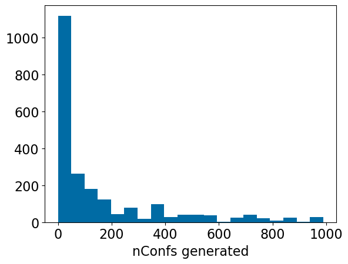
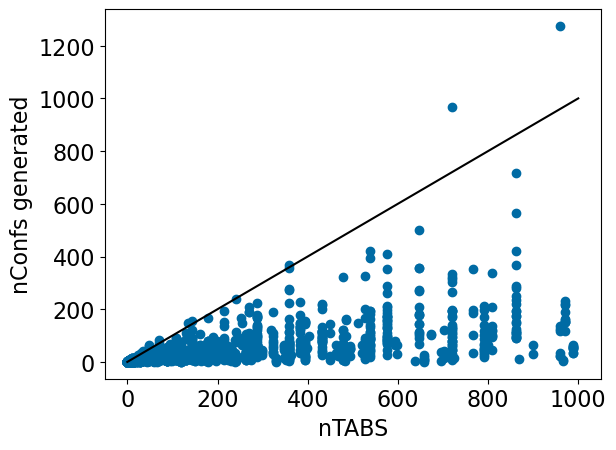
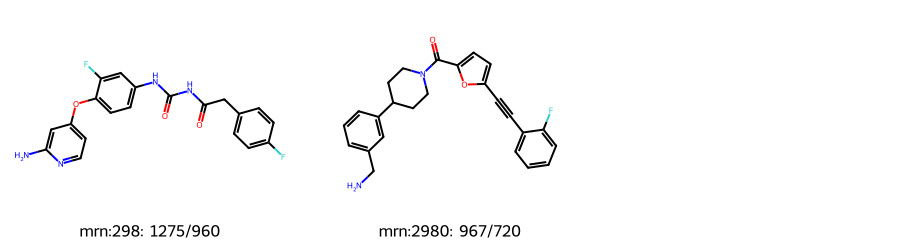
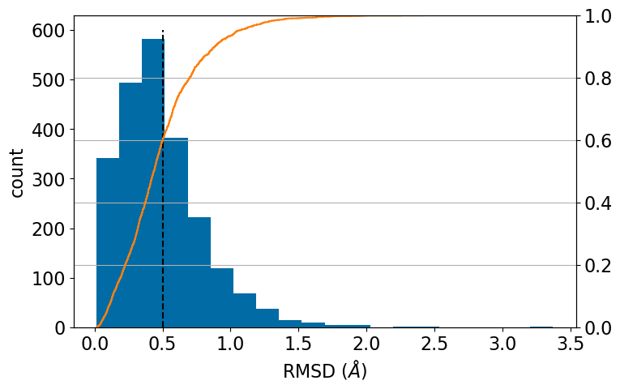
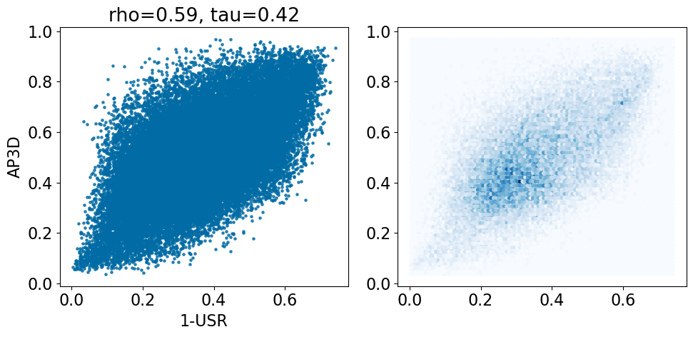
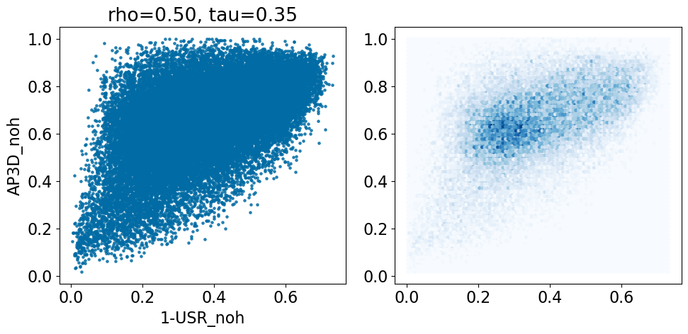
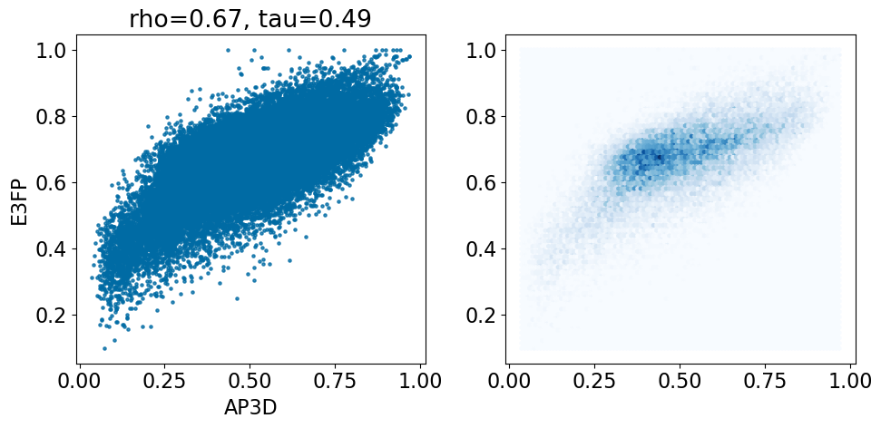

from rdkit import Chem
from rdkit.Chem import Draw
from rdkit.Chem.Draw import IPythonConsole
IPythonConsole.ipython_3d = True
from matplotlib import pyplot as plt
plt.style.use('tableau-colorblind10')
plt.rcParams['font.size'] = '16'
%matplotlib inline
%load_ext sql
%config SqlMagic.feedback=0Working with the LOBSTER Data set II
datasets
3d
similarity
Conformer generation and comparing 3D fingerprints
This post builds on the last post and does a little bit of work with the LOBSTER data set.
I had planned something a bit more ambitious for this post, but while writing it I discovered a bug in the conformer generator that it took me a while to track down (it’s still not fixed) and that ate up all the time I had set aside for working on the blog this week. I’ll do another post soon.
Generating conformers for the LOBSTER compounds
import lwreg
from lwreg import utilsLoad our lwreg configuration from the database we created before:
config = utils.configure_from_database(dbname='lobster_112024',dbtype='postgresql')
lwreg.set_default_config(config)
config{'dbname': 'lobster_112024',
'dbtype': 'postgresql',
'cacheConnection': True,
'standardization': 'none',
'removeHs': 1,
'useTautomerHashv2': 0,
'registerConformers': 1,
'numConformerDigits': 3,
'lwregSchema': ''}d = %sql postgresql://localhost/lobster_112024 \
select molregno,ntabs from rdk.descriptors where ntabs<1000;
mrns,ntabs = zip(*d)
len(mrns)2226cn = utils.connect(config=config) #< lwreg provides a convenience function to get a database connection
curs = cn.cursor()
curs.execute('create schema generated_data')
curs.execute('''create table generated_data.confgen
(molregno integer references hashes,
conf_id integer references conformers,
method text)''')
cn.commit()mbs = utils.retrieve(ids=mrns)from tqdm import tqdm
from rdkit.Chem import rdDistGeom
from rdkit import rdBaseGenerate and store conformers
cn = utils.connect(config=config) #< lwreg provides a convenience function to get a database connection
curs = cn.cursor()
ps = rdDistGeom.ETKDGv3()
ps.randomSeed = 0xf00d
ps.pruneRmsThresh = 0.5
ps.numThreads = 8
for mrn,nt in tqdm(zip(mrns,ntabs)):
mb = mbs[mrn][0]
mol = Chem.MolFromMolBlock(mb,removeHs=False)
if not mol:
print(mrn)
continue
with rdBase.BlockLogs():
cids = rdDistGeom.EmbedMultipleConfs(mol,2*nt,ps)
reg = utils.register_multiple_conformers(mol=mol,fail_on_duplicate=False)
rows = [(x,y,'ETKDGv3') for x,y in reg]
if rows:
curs.executemany('insert into generated_data.confgen values (%s,%s,%s)',rows)
cn.commit()
2226it [21:11, 1.75it/s]d = %sql postgresql://localhost/lobster_112024 \
select molregno,nconfs,ntabs from \
(select molregno, count(conf_id) nconfs from generated_data.confgen group by (molregno)) t1 \
join rdk.descriptors using (molregno) where ntabs<1000;Number of conformers generated per compound:
plt.Figure(figsize=(5,5))
plt.hist([x[2]-1 for x in d],bins=20); #< it's -1 because we also have the crystal conformer
#plt.plot((0,1000),(0,1000),'k-');
plt.xlabel('nConfs generated');
nTABS is designed to be an upper limit on the number of conformers; let’s check to confirm that this works:
plt.Figure(figsize=(5,5))
plt.scatter([x[2]-1 for x in d],[x[1] for x in d]);
plt.plot((0,1000),(0,1000),'k-');
plt.xlabel('nTABS')
plt.ylabel('nConfs generated');
That works quite well in general, but let’s look at the two outliers
d = %sql postgresql://localhost/lobster_112024 \
select molregno,canonical_smiles,nconfs,ntabs from \
(select molregno, count(conf_id) nconfs from generated_data.confgen group by (molregno)) t1 \
join rdk.descriptors using (molregno) \
join hashes using (molregno) \
where ntabs<1000 and ntabs>600 and nconfs-ntabs>100;len(d)2Draw.MolsToGridImage([Chem.MolFromSmiles(x[1]) for x in d],subImgSize=(300,250),
legends=[f'mrn:{x[0]}: {x[2]}/{x[3]}' for x in d])
The underestimate of the number of conformers for compound 2980 are due to the triple bond. This is a known limitation of the TABS algorithm that was discussed in the paper and that we’re planning on working on.
The “extra” conformers observed in compound 298 are due to a bug in the conformer generation code that leads to non-physical conformers, I hope to have this one fixed in a future RDKit release.
Actually retrieve all of the conformers to see how we did at finding the crystal conformer in our conformer ensembles:
d = %sql postgresql://localhost/lobster_112024 \
select molregno,conf_id,molblock from conformers order by (molregno,conf_id) asc;Find the conformer for each molecule that’s closest to the crystal structure using RMSD as the metric:
from rdkit.Chem import rdMolAlign
accums = {}
r_mrn,r_cid,r_mb = d.pop(0)
r_mol = Chem.MolFromMolBlock(r_mb)
best = 1e8
best_cid = -1
for (mrn,cid,mb) in tqdm(d):
mol = Chem.MolFromMolBlock(mb)
if mrn==r_mrn:
rms = rdMolAlign.GetBestRMS(r_mol,mol)
if rms<best:
best = rms
best_cid = cid
else:
if best_cid > 0:
accums[r_mrn] = (best,best_cid)
r_mrn = mrn
r_cid = cid
r_mol = mol
best = 1e8
best_cid=-1100%|████████████████████████████████████████████████████████████████████████████████████████████████████████| 81315/81315 [00:14<00:00, 5507.62it/s]plt.figure(figsize=(8,5))
ax = plt.subplot(1,1,1)
plt.hist([x[0] for x in accums.values()],bins=20);
plt.plot((0.5,0.5),(0,600),'k--');
plt.xlabel('RMSD ($\\AA$)')
plt.ylabel('count')
ax2 = ax.twinx()
ax2.ecdf([x[0] for x in accums.values()],c='C1');
ax2.grid();
import numpy as np
np.quantile([x[0] for x in accums.values()],[0.6,0.8,0.9])array([0.50160024, 0.69941346, 0.88421735])60% of molecules are within 0.50A of the crystal structure, 80% are within 0.70A, and 90% are within 0.88A. That’s pretty good.
Comparing shape-similarity approaches
The RDKit has a couple of built-in methods for doing shape similarity. Let’s compare those to each other on this data set:
Get a map from (nm,pdb) tuples to (molregno,confid,molblock):
d = %sql postgresql://localhost/lobster_112024 \
select ligname,pdb,molregno,conf_id,molblock \
from lobster_data.all_ligands join conformers using (molregno,conf_id);
ligs = {}
for nm,pdb,mrn,cid,mb in d:
mol = Chem.MolFromMolBlock(mb,removeHs=False)
mol_noh = Chem.MolFromMolBlock(mb)
ligs[(nm,pdb.lower())] = (mrn,cid,mb,mol,mol_noh)pairstats = %sql postgresql://localhost/lobster_112024 \
select * from lobster_data.pair_stats
pairstats = list(pairstats.dicts())Note that the scores for the ligand pairs in the LOBSTER data set are each present twice: 1. Ligand1 as reference, Ligand2 as probe 1. Ligand2 as reference, Ligand1 as probe
We can see this here:
len(pairstats)72592%sql postgresql://localhost/lobster_112024 \
select count(*) from lobster_data.pair_stats where (ligname1,pdb1)>(ligname2,pdb2)| count |
|---|
| 36296 |
from scipy import statsdef comparison_plot(pairstats,metric1,metric2,invert1=False,invert2=False):
x1 = [x[metric1] for x in pairstats]
if invert1:
x1 = [1-x for x in x1]
metric1 = f'1-{metric1}'
x2 = [x[metric2] for x in pairstats]
if invert2:
x2 = [1-x for x in x2]
metric2 = f'1-{metric2}'
r,_ = stats.spearmanr(x1,x2)
tau,_ = stats.kendalltau(x1,x2)
plt.figure(figsize=(10,5))
plt.subplot(1,2,1)
plt.scatter(x1,x2,alpha=0.5,s=5)
plt.xlabel(metric1)
plt.ylabel(metric2)
plt.title(f'rho={r:.2f}, tau={tau:.2f}');
plt.subplot(1,2,2)
plt.hexbin(x1,x2,cmap='Blues');
plt.tight_layout()Calculate USR scores:
from rdkit.Chem import rdMolDescriptors
for d in pairstats:
m1 = ligs[(d['ligname1'],d['pdb1'])][3]
m2 = ligs[(d['ligname2'],d['pdb2'])][3]
usr1 = rdMolDescriptors.GetUSR(m1)
usr2 = rdMolDescriptors.GetUSR(m2)
d['USR'] = rdMolDescriptors.GetUSRScore(usr1,usr2)
m1 = ligs[(d['ligname1'],d['pdb1'])][4]
m2 = ligs[(d['ligname2'],d['pdb2'])][4]
usr1 = rdMolDescriptors.GetUSR(m1)
usr2 = rdMolDescriptors.GetUSR(m2)
d['USR_noh'] = rdMolDescriptors.GetUSRScore(usr1,usr2) Calculate atom pair fingerprints using 3D distances instead of topological distances:
from rdkit.Chem import rdFingerprintGenerator
from rdkit import DataStructs
fpg = rdFingerprintGenerator.GetAtomPairGenerator(use2D=False)
for d in pairstats:
m1 = ligs[(d['ligname1'],d['pdb1'])][3]
m2 = ligs[(d['ligname2'],d['pdb2'])][3]
fp1 = fpg.GetCountFingerprint(m1)
fp2 = fpg.GetCountFingerprint(m2)
d['AP3D'] = DataStructs.DiceSimilarity(fp1,fp2,returnDistance=True)
m1 = ligs[(d['ligname1'],d['pdb1'])][4]
m2 = ligs[(d['ligname2'],d['pdb2'])][4]
fp1 = fpg.GetCountFingerprint(m1)
fp2 = fpg.GetCountFingerprint(m2)
d['AP3D_noh'] = DataStructs.DiceSimilarity(fp1,fp2,returnDistance=True)
comparison_plot(pairstats,'USR','AP3D',invert1=True,invert2=False)
comparison_plot(pairstats,'USR_noh','AP3D_noh',invert1=True,invert2=False)
Finally, try the E3FP fingerprint (a 3D analog of the Morgan fingerprint) from this paper. The code is easily pip installable directly from the github repo. Thanks to the Keiser lab team for making this so easy!
It takes a while to run this one:
import logging
from e3fp.pipeline import fprints_from_mol
logging.disable(logging.INFO)
def get_fp(m):
fp = fprints_from_mol(m,fprint_params={'counts':True})[0]
rdkfp = DataStructs.ULongSparseIntVect(2**32)
for k,v in fp.counts.items():
rdkfp[int(k)] = v
return rdkfp
for d in pairstats:
m1 = ligs[(d['ligname1'],d['pdb1'])][3]
m2 = ligs[(d['ligname2'],d['pdb2'])][3]
fp1 = get_fp(m1)
fp2 = get_fp(m2)
d['E3FP'] = DataStructs.DiceSimilarity(fp1,fp2,returnDistance=True)
m1 = ligs[(d['ligname1'],d['pdb1'])][4]
m2 = ligs[(d['ligname2'],d['pdb2'])][4]
fp1 = get_fp(m1)
fp2 = get_fp(m2)
d['E3FP_noh'] = DataStructs.DiceSimilarity(fp1,fp2,returnDistance=True)
comparison_plot(pairstats,'AP3D','E3FP',invert1=False,invert2=False)
comparison_plot(pairstats,'AP3D_noh','E3FP_noh',invert1=False,invert2=False)
Save the results in the database so that we can work with them later:
cn = utils.connect(config=config) #< lwreg provides a convenience function to get a database connection
curs = cn.cursor()
curs.execute('create schema if not exists results')
curs.execute('create table if not exists results.shape_scores \
(ligname1 text, pdb1 text, ligname2 text, pdb2 text,\
USR float, USR_noh float, AP3D float, AP3D_noh float, E3P float, E3P_noh float)')
curs.execute('delete from results.shape_scores')
rows = [[r['ligname1'],r['pdb1'],r['ligname2'],r['pdb2'],\
r['USR'],r['USR_noh'],r['AP3D'],r['AP3D_noh'],r['E3FP'],r['E3FP_noh']] for r in pairstats]
curs.executemany('insert into results.shape_scores values (%s,%s,%s,%s,%s,%s,%s,%s,%s,%s)',rows)
cn.commit()That’s it for this week